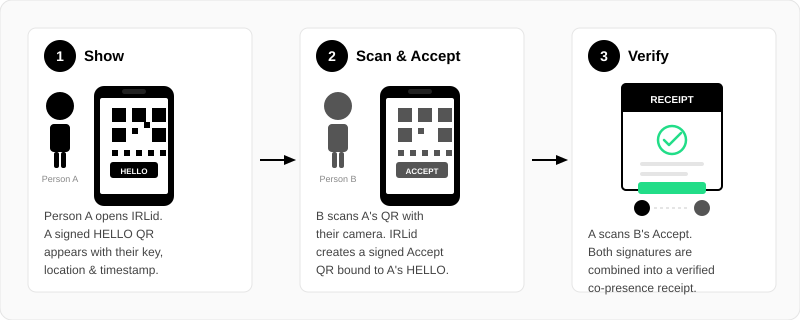

Proof of Personhood
IRLid lets two people prove they met in the real world — no centralised authority, no biometrics, no personal data collected. Just two phones, two scans, and a cryptographic receipt.
What is Proof of Personhood?
Proof of personhood is a way to verify that a digital identity belongs to a unique, real human being rather than a bot, an AI agent, or a duplicate account. As online systems become increasingly automated, the ability to distinguish genuine human participation from synthetic activity is becoming a fundamental challenge.
Existing solutions often require invasive biometric scans, centralised identity providers, or trust in a single company. IRLid takes a different approach: instead of asking who you are, it proves that you were physically present with another person at a specific time and place.
How IRLid Works
When two people meet, they complete a short QR-code handshake using their phones. Each device holds a unique ECDSA P-256 key pair generated in the browser. The handshake binds both parties' cryptographic signatures to a shared timestamp and GPS location, producing a receipt that can be independently verified by anyone.
The whole process takes about ten seconds and requires no app download — IRLid runs entirely in the browser. The three steps are:

Step 1 — Show: Person A opens IRLid. Their phone generates a signed HELLO QR code containing their public key, GPS coordinates, a timestamp, and a random nonce. This is displayed on screen.
Step 2 — Scan & Accept: Person B scans A's QR using their phone camera. IRLid opens and automatically creates a signed response that is cryptographically bound to A's specific HELLO. Person B's Accept QR is displayed on their screen.
Step 3 — Verify: Person A opens the Scan page and scans B's Accept QR. The app validates both signatures, checks that timestamps are within 90 seconds of each other, confirms GPS locations are within 12 metres, and combines everything into a single signed receipt. The receipt is uploaded and immediately available to both parties.
Cryptographic Guarantees
Every receipt undergoes multiple verification checks. Here is what each check proves:
ECDSA P-256
Each party signs their payload with a private key that never leaves the device. The receipt contains both signatures, verifiable by anyone using the corresponding public keys.
Hash Chaining
Person B's response contains a SHA-256 hash of Person A's HELLO. This prevents replay attacks — a response is only valid for the exact HELLO it was created for.
90-Second Window
Both timestamps must be within 90 seconds of each other. This ensures the exchange happened in real time, not replayed from an old recording.
12-Metre Tolerance
GPS coordinates from both devices must be within 12 metres. Combined with the time constraint, this provides strong evidence of physical co-presence.
Privacy Model
IRLid is designed to prove presence, not identity. Your device generates a random key pair — there is no registration form, no email required, and no biometric data collected. Optionally, you can link a Google account to associate a name and profile picture with your receipts, but this is entirely voluntary.
Receipts are stored with the public keys of both parties. They do not contain names, emails, or any personally identifiable information unless you choose to link an account. The receipt JSON is fully transparent — anyone can inspect exactly what data is stored.
The core handshake works entirely between two browsers. The backend server is used only for optional features: account linking, receipt storage, and third-party verification. If the server were to disappear, every receipt already issued would remain independently verifiable using the cryptographic data embedded within it.
Use Cases
- Sybil Resistance Prove that online accounts belong to distinct real people. Useful for DAOs, voting systems, airdrops, or any platform that needs to prevent one person operating many accounts.
- Event Attendance Generate verifiable proof that someone attended a conference, meetup, or workshop — without relying on a centralised check-in system.
- Trust Networks Build a web-of-trust where each connection represents a verified in-person meeting. Over time, this creates a social graph grounded in real-world relationships.
- Marketplace Verification Confirm that a buyer and seller actually met for a handover. The receipt serves as timestamped, location-stamped proof of the exchange.
- Compliance & Audit For regulated environments that require proof of physical presence — site visits, inspections, or witness verification — IRLid provides a tamper-evident digital record.
Open & Verifiable
IRLid is open source. The entire codebase — frontend, backend, and database schema — is publicly available on GitHub. Anyone can audit the cryptographic logic, verify that the signing process is sound, or run their own instance.
Receipts can be independently verified on the Check page by pasting a receipt hash. All cryptographic checks are re-run in the browser — no trust in the server is required.